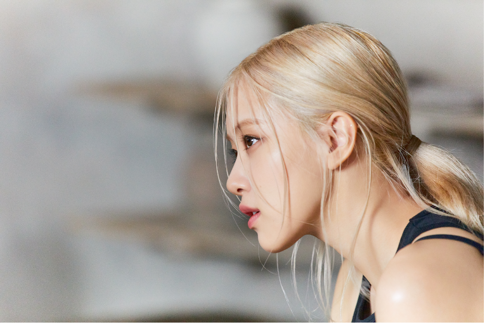

Sulwhasoo
Rose Brand Site Contents
SULWHASOO STORYTELLER
SULWHASOO REBLOOM
with ROSÉ
GLOBAL AMBASSADOR, ROSÉ
ROSÉ와 함께 할 설화수의 아름다운 여정
브랜드의 시작부터 완성까지
설화수가 걸어온 아름다움을 향한 여정들에 글로벌 앰배서더 ROSÉ가 함께합니다.
그녀의 감각으로 재현한
앰배서더 필름 <사람은 흙에서 태어나 꽃이 된다>를 통해,
설화수의 세계관 스토리를 만나보세요.
AMBASSADOR FILM
사람은 흙에서 태어나 꽃이 된다
설화수의 시작과 완성까지의 여정을 담은
<사람은 흙에서 태어나 꽃이 된다>는
흙, 눈, 꽃의 은유적인 상징물로
설화수의 정신과 이미지를 시네마틱하게 표현하였습니다.
AMBASSADOR FILM
사람은 흙에서 태어나 꽃이 된다
MOTHER EARTH
흙의 기운으로 시작되다
1932년, 아름다움을 꽃피우기 위해 시작된
설화수의 찬란한 여정은 모든 만물의 근원이 되는
흙의 정신과 맞닿아 있습니다.


- 
AMBASSADOR STORY
설화수, 그리고 ROSÉ
글로벌 앰배서더 ROSÉ.
지금의 아티스트가 되기까지 그녀가 꿈을 향해
정진하던 모습은 설화수가 선도하고자 하는
여성의 진취적인 면모와 닮아 있습니다.
SNOW
고난 끝에 맞이한 환희
고난과 환희를 동시에 뜻하는 눈은
설화수가 지금의 모습으로 성장할 수 있었던 동력인, 오랜 시간 지켜온 철학과 헤리티지를 의미합니다.
흙, 눈, 꽃의 은유적인 상징물로 설화수의 정신과 이미지를 시네마틱하게 표현하였습니다.
AMBASSADOR STORY
다시 피어난 설화수, ROSÉ와 함께
철학과 헤리티지를 바탕으로 ROSÉ와 함께
정신과 움직임을 계승해 나가며
설화수는 새롭게 피어나기를 다짐합니다.
FLOWER
마침내 찬란한 꽃이 피어나다
설화수의 아름다운 여정은
마침내 눈을 뚫고 완연한 꽃으로 피어나
지금의 설화수의 모습으로 완성됩니다.